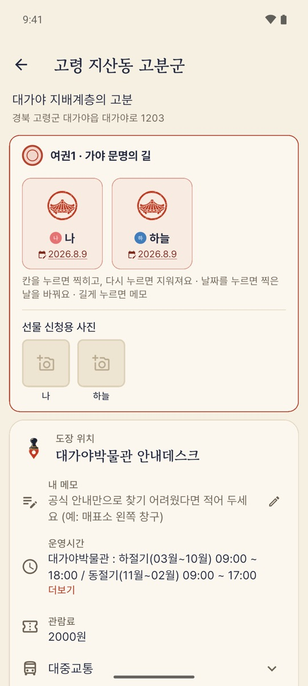
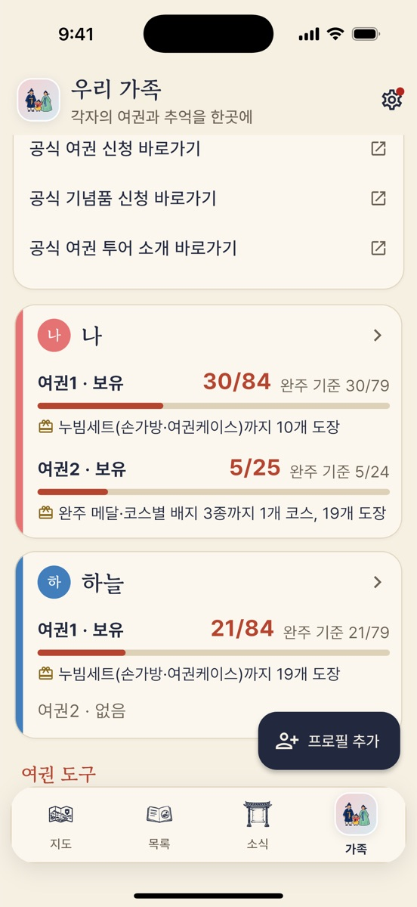
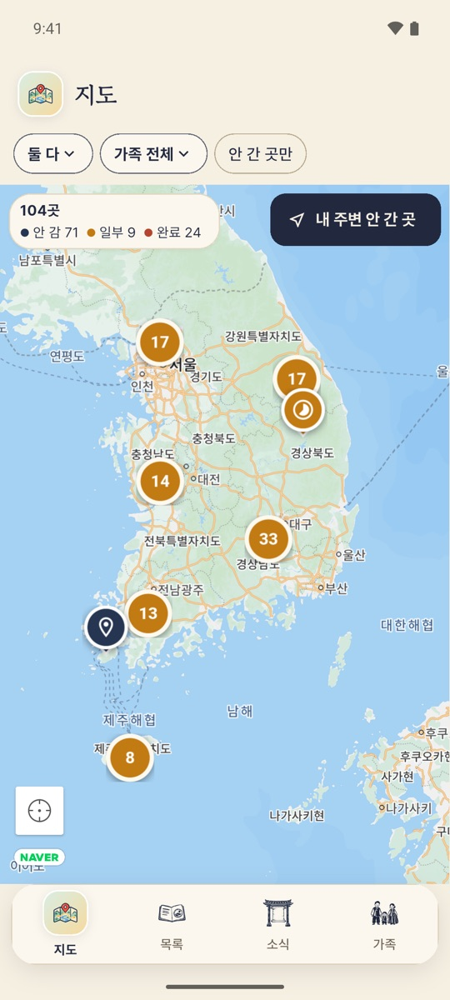
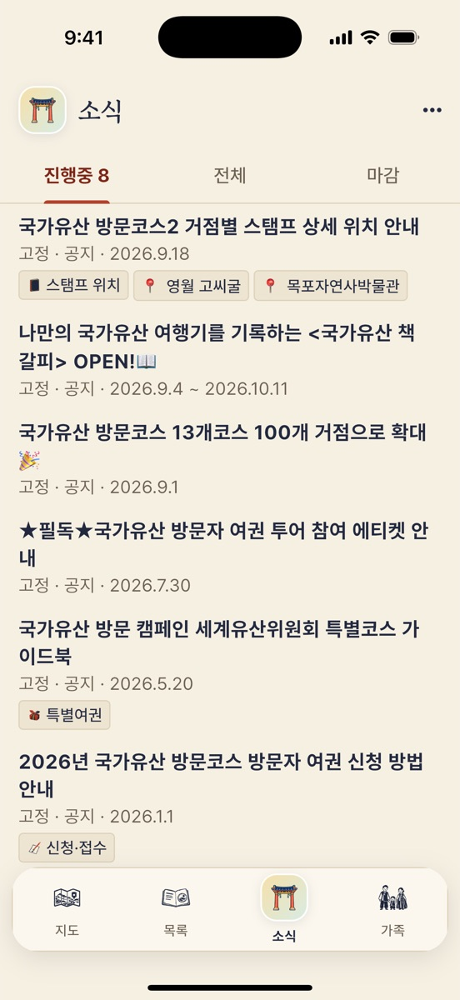

가족과 함께 채우는
방문자 여권 도장 기록
국가유산 방문코스 13개 길, 100여 곳.
어디까지 찍었는지, 도장은 어디 있는지, 다음 기념품까지 몇 개 남았는지 한 화면에서 봐요.
회원가입·로그인 없이 바로 써요. 기록은 내 폰에만 저장돼요.
이런 걸 도와줘요
종이 여권은 그대로 들고 다니고, 앱은 옆에서 길잡이를 해요.
한 번 눌러 도장 기록
목록이나 지도에서 동그라미를 누르면 끝. 가족이 같이 찍었으면 한꺼번에, 지난 여행은 날짜를 바꿔서 기록해요.
도장 찍는 곳 안내
거점마다 도장이 있는 곳, 운영시간, 관람료, 교통을 모아 보여 줘요. 같은 거점이라도 길마다 도장 위치가 다르면 따로 알려 줘요.
지도와 길찾기
안 간 곳만 지도에 띄우고, 가까운 거점을 순서대로 보여 줘요. 네이버지도·카카오맵·티맵·Apple 지도로 바로 길찾기.
가족마다 여권 따로
여권1·여권2를 사람별로 관리해요. 아이 여권과 부모 여권 진행률을 한눈에 비교할 수 있어요.
다음 기념품까지
지금 몇 개를 찍었고 다음 기념품까지 몇 개 남았는지 알려 줘요. 선물 신청용 도장 사진도 규격에 맞춰 만들어 줘요.
공식 소식과 백업
공식 공지·특별 여권·도장 위치 변경 소식을 정리해 알려 줘요. 폰을 바꿀 땐 백업 파일 하나로 기록과 사진을 옮겨요.
화면 둘러보기
종이 여권 느낌 그대로, 글자는 크게.




자주 묻는 질문
궁금한 게 더 있으면 hopalt@gmail.com으로 알려 주세요.
앱에서 도장을 찍으면 기념품을 받을 수 있나요?
아니요. 기념품은 실물 방문자 여권에 찍은 도장으로 공식 홈페이지에서 신청해요. 앱은 어디까지 찍었는지 기록하고 신청에 필요한 사진을 만드는 걸 도와줘요.
회원가입이 필요한가요?
필요 없어요. 설치하면 바로 쓸 수 있고, 가족 프로필은 이름(별명)만 정하면 돼요.
기록은 어디에 저장되나요?
내 폰 안에만 저장돼요. 서버가 없어서 개발자도 볼 수 없어요. 폰을 바꿀 때는 설정의 백업 파일로 옮겨요. 자세한 건 개인정보처리방침을 봐 주세요.
광고가 있나요?
네, 운영비를 위해 화면 한쪽에 카카오 애드핏 광고가 나와요. 가족 기록·사진·위치는 광고에 쓰지 않아요. 자세한 건 개인정보처리방침 5장을 봐 주세요.
거점 정보가 공식 홈페이지와 다르면요?
설정 > 공식 데이터에서 최신 정보를 다시 받을 수 있어요. 현장 사정이 바뀌는 경우가 있으니 방문 전에는 공식 홈페이지 공지도 같이 확인해 주세요.